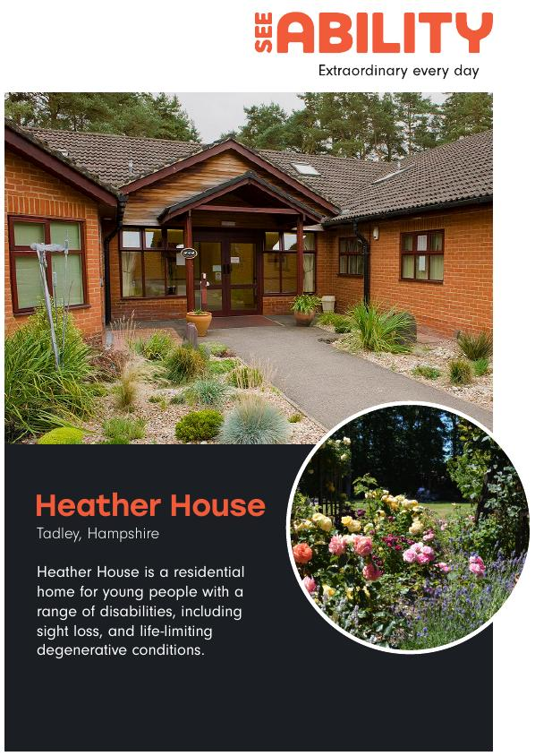

Anxiété
Heather House
Au Royaume-Uni, la Heather House accueille depuis de nombreuses années des jeunes porteurs de la maladie de Batten (CLN 3). Sarah Kenrick a été pendant longtemps infirmière dans ce centre, et a construit une expertise précieuse, qu'elle partage avec enthousiasme, par exemple lors des conférences BDFA, mais également sous forme de documents très pédagogiques.
C'est avec son aimable autorisation que nous avons traduit quatre documents, dont la lecture permet de comprendre de nombreux éléments concrets conséquences de la maladie, que les documents scientifiques ne permettent pas forcément de percevoir. Tout en étant des manuels de gestes de soin, ces documents donnent à comprendre les besoins spécifiques des personnes porteuses de CLN3, et par extension aux autre CLN.